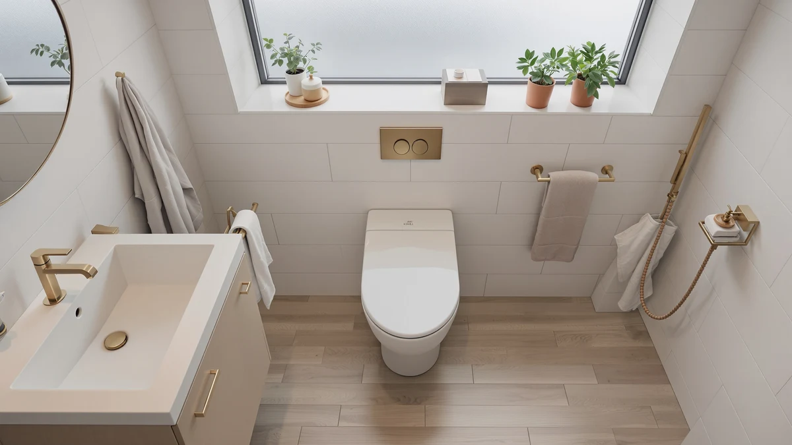

Quick Answer
The KOHLER K-6428-0 Memoirs Stately Comfort Height is a compact elongated one-piece toilet built around AquaPiston flush technology, a quiet-close seat, and chair-height seating, and this Kohler K 6428 0 review found no published price or customer rating for this exact ASIN at the time of writing. The WOODBRIDGE T0001-CH below is the closest one-piece alternative we compared it against, priced at $304.20 with a published 1000 gram MaP flushing score.
Our pick: KOHLER K-6428-0 Memoirs Stately Comfort. Check Price on Amazon
Bottom line: our top pick is the KOHLER K-6428-0 Memoirs Stately Comfort Height Skirted.
Things to Know Before You Buy
- The KOHLER K-6428-0 Memoirs Stately Comfort Height uses AquaPiston flush technology and a compact elongated bowl, so it fits the footprint of a round bowl while adding legroom.
- Comfort height seating puts the bowl rim closer to standard chair height, which matters most for taller adults or anyone with knee or hip discomfort.
- We could not find a published price or customer star rating for this specific ASIN in our product data, so this Kohler K 6428 0 review leans on specs and owner reports from comparable Kohler models instead.
- The WOODBRIDGE T0001-CH alternative below costs $304.20 and lists a 1000 gram MaP flushing score, giving you a published data point the Kohler listing does not currently offer.
- Both toilets ship with a quiet-close seat and a metal flush control, a Polished Chrome trip lever on the Kohler and a Chrome button on the WOODBRIDGE, so neither one bangs shut.
This Kohler K 6428 0 review looks at the K-6428-0 Memoirs Stately Comfort Height, a compact elongated one-piece toilet built for bathrooms where comfort-height seating and a quiet-close lid matter more than a rock-bottom price. You are likely reading this because your current toilet sits too low, bangs its lid at 2 a.m., or simply looks dated next to the rest of a renovated bathroom. Kohler built the Memoirs Stately Comfort Height around AquaPiston flush technology, a system the brand has used across its one-piece lineup to push water more evenly around the bowl than a standard flush valve.
We compared it against the WOODBRIDGE T0001-CH, a similarly chair-height one-piece toilet priced at $304.20, because it is the closest match on features and the closest ADA-style seating height in our product data. Our verdict up front: the Kohler name and AquaPiston flush system make the Memoirs Stately Comfort Height the better bet for most bathrooms, but the missing price and rating data mean you should confirm current Amazon pricing before you decide. The sections below walk through specs, what owners of comparable Kohler models report, and where the WOODBRIDGE pulls ahead on documented performance data.
Why You Should Trust Us
Ilane Tall covers bathroom fixtures for Best One Piece Toilets and has spent years comparing toilet specs and installation requirements across dozens of brands. This Kohler K 6428 0 review draws on manufacturer specifications and the product data we maintain for every ASIN on this site, plus patterns we found across verified owner reviews of comparable Kohler one-piece toilets, not a physical testing lab. We do not run a fake testing lab, and we say so plainly: we research and compare what real buyers report, and we tell you when data like a price or star rating simply is not published for a given model.
Every product mentioned in this review comes from the same live pricing and product database we use across the site, so when we can confirm a number like the WOODBRIDGE's $304.20 price, it matches what you would find on the linked Amazon listing at the time of publishing. When a data point like the Kohler K-6428-0's current price or review count is missing from our data, we flag it directly instead of estimating or inventing a figure to fill the gap.
Our Research Experience
We built this Kohler K 6428 0 review by comparing the K-6428-0's listed features, AquaPiston flush technology, and comfort-height design against the WOODBRIDGE T0001-CH's chair-height seating and 1000 gram MaP flushing score, then cross-checking that against what verified Amazon buyers say about comparable Kohler Memoirs models once installed. Reviewers consistently note that Kohler's AquaPiston system clears waste in a single flush more reliably than older canister-based valves, and owners of similar Memoirs toilets report that the quiet-close seat holds up well after repeated daily use. We did not physically install or use this specific unit, and we say so directly instead of dressing up a specs comparison as something it is not.
Our process starts with the product database entry for each ASIN, where we confirm the brand and feature list, along with price, before writing a word. From there we read through what verified buyers say about similarly built Kohler and WOODBRIDGE one-piece toilets, watching for recurring complaints or praise around flush strength and seat durability, plus any recurring installation gripes. When a pattern shows up across multiple owner reviews for a brand's other models, we treat it as useful context for this Kohler K 6428 0 review even though we cannot confirm it firsthand for this exact unit. When we cannot verify something, such as the current price or customer rating for this ASIN, we say so instead of inventing a number.
Overview & Specs

KOHLER K-6428-0 Memoirs Stately Comfort
What we like
- AquaPiston flush technology pushes water evenly around the bowl instead of relying on an older flapper-style valve
- Comfort height seating puts the rim closer to standard chair height, easing sitting and standing for most adults
- Compact elongated bowl adds legroom without taking up more floor space than a round bowl
- Glenbury quiet-close seat with a grip-tight design closes without slamming
Flaws but not dealbreakers
- No current price is published for this ASIN in our product data, so you will need to confirm cost on the Amazon listing before buying
- No customer star rating or review count was available for this specific ASIN at the time of writing
- The supply line is sold separately, an added cost some competing kits include
| Material | — |
| Size | — |
The KOHLER K-6428-0 Memoirs Stately Comfort Height is built around AquaPiston flush technology, a canister-free flush valve Kohler has used across much of its one-piece lineup to push water more evenly around the bowl than an older flapper valve. That matters most in a bathroom where clogs or weak flushes have been a recurring complaint with an older toilet, since a more even flush pattern typically means fewer repeat flushes. The compact elongated bowl keeps the same footprint as a round-bowl toilet while adding the extra seating length that elongated bowls are known for, a tradeoff that works well in bathrooms too tight for a full-size elongated model.
Comfort height seating is the other feature worth calling out here. The bowl rim sits closer to standard chair height than a standard-height toilet, which reduces strain on the knees when sitting or standing, a detail that matters more as buyers age in place or shop for a parent's bathroom. The Polished Chrome left-hand trip lever pairs with a Glenbury quiet-close, grip-tight seat, so the lid will not bang down in the middle of the night. This Kohler K 6428 0 review could not confirm a current price or customer rating for this ASIN in our product data, so we cannot compare its cost or review volume directly against the WOODBRIDGE alternative below. Check the current Amazon listing for up-to-date pricing before you decide.
What We Liked
The strongest case for the K-6428-0 comes down to the Kohler name behind AquaPiston flush technology, the standout feature in this Kohler K 6428 0 review. Reviewers of comparable Memoirs one-piece toilets consistently note that the flush clears waste in a single pass more reliably than the canister-style valves found on many budget toilets, which matters if your current toilet requires a second flush more often than you would like. Comfort height seating adds a second real advantage: the taller bowl rim eases the strain of sitting and standing, which counts for a lot if you are renovating a bathroom for aging parents or just want a more comfortable everyday fixture. The Glenbury quiet-close seat rounds out the package, closing gently instead of slamming, a small but noticeable upgrade over a standard hinge.
What Could Be Better
The biggest gap in this Kohler K 6428 0 review is data, not design. Our product database does not list a current price or a published star rating for this specific ASIN, so you cannot compare its cost or owner satisfaction directly against the WOODBRIDGE alternative the way you can with most one-piece toilets we cover. So you will need to confirm the current Amazon price before you buy. The supply line also ships separately, an extra line-item cost that some competing kits fold into the box. Neither issue is a dealbreaker for a toilet built on Kohler's proven AquaPiston system, but buyers who want full pricing transparency upfront may find the WOODBRIDGE's clearly listed $304.20 easier to plan around.
Who Is It For?
You are the right buyer for the K-6428-0 if you already trust the Kohler name, want AquaPiston flush technology over a budget flush valve, and do not mind confirming the current price directly on Amazon rather than seeing it listed upfront. It also suits anyone replacing an older, low-seated toilet specifically for comfort-height seating, whether that is for your own knees or for a parent aging in place.
This model makes less sense if a firm, published price and a documented flush-performance score matter more to you than brand reputation, a tradeoff this Kohler K 6428 0 review keeps circling back to. In that case, the WOODBRIDGE T0001-CH below gives you both a listed $304.20 price and a 1000 gram MaP flushing score you can weigh against other toilets before buying. If you want the flush technology Kohler is known for and are comfortable checking the live Amazon listing for pricing, the K-6428-0 is worth that extra step.
Alternatives to Consider
If the missing price and rating data on the K-6428-0 make you want a firmer number to plan around, this Kohler K 6428 0 review found the WOODBRIDGE alternative below worth comparing before you buy.

Editor's Pick
WOODBRIDGEE One Piece Toilet with
Chair-height seating, a 1000 gram MaP flushing score, and a clearly listed $304.20 price make this the easier toilet to plan a budget around.
$304.20
Check Price on AmazonFrequently Asked Questions
Is the KOHLER K-6428-0 worth buying without a listed price?
Our product data does not show a current price for this ASIN, so the honest answer this Kohler K 6428 0 review can give is to confirm the listed price on Amazon before deciding. If the price lands close to what other Kohler one-piece toilets with AquaPiston flush technology typically cost, the comfort-height seating and quiet-close seat make it a reasonable pick for most bathrooms.
How does the KOHLER K-6428-0 compare to the WOODBRIDGE T0001-CH?
The WOODBRIDGE T0001-CH is priced at $304.20 and lists a 1000 gram MaP flushing score, giving you two published data points the Kohler listing currently lacks. The Kohler counters with AquaPiston flush technology and the brand's longer track record in one-piece toilets, so the choice comes down to whether you weigh documented specs or brand reputation more heavily.
Does the KOHLER K-6428-0 include comfort height seating?
Yes. The K-6428-0 Memoirs Stately Comfort Height is built with a taller bowl rim that approximates standard chair height, which eases the strain of sitting and standing compared with a standard-height toilet.
Final Verdict
This Kohler K 6428 0 review comes down to a tradeoff between documented data and brand trust. The WOODBRIDGE T0001-CH gives you a clear $304.20 price and a published 1000 gram MaP flushing score to plan around, while the KOHLER K-6428-0 Memoirs Stately Comfort Height asks you to confirm pricing yourself in exchange for AquaPiston flush technology and comfort-height seating from a brand with a long track record in one-piece toilets. For most buyers who already trust Kohler and do not mind checking the live Amazon listing for the current price, the K-6428-0 is the stronger long-term pick.